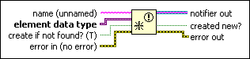

Obtain Notifier Function
Owning Palette: Notifier Operations Functions
Requires: Base Development System
Returns a reference to a notifier.
Use this reference when calling other Notifier Operations functions.

 Add to the block diagram Add to the block diagram |
 Find on the palette Find on the palette |